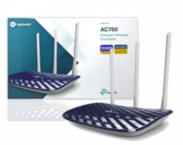
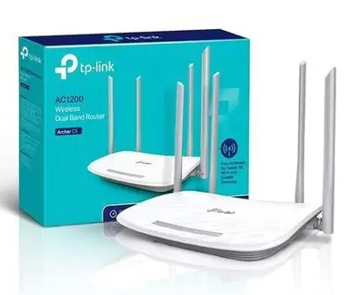

Quantidade de roteador por residência
A quantidade de roteadores na residência deve ser determinada pela quantidade de quartos. Onde há dois quartos apenas um aparelho é suficiente, onde há três ou quatro, dois aparelhos são necessários. Onde há mais de quatro quartos, é necessário realizar um projeto.
Para as residências que possuem dois pisos é recomendado o uso de um roteador para cada piso.
Roteadores disponíveis
Roteador TP-Link 03 antenas - C20.

Especificações técnicas:
Conexões simultâneas de 2.4GHz 300Mbps e 5GHz 433Mbps para um total de 733Mbps de largura de banda disponível.
3 antenas externas oferecem sinal omnidirecional estável e cobertura wireless superior.
Suporta três modos: Roteador, Repetidor e Access Point.
Suporte a IGMP Proxy/Snooping, Bridge e Tag VLAN para otimizar o streaming de IPTV.
Os Controles dos Pais gerenciam quando e como os dispositivos conectados podem acessar a Internet.
Rede para Convidados oferece acesso separado para os hóspedes, ao mesmo tempo em que protege a rede privada.
Se você tem uma velocidade de até 100mega contratada com o seu provedor de internet,o Archer C20 é ideal para a sua casa.
Roteador TP-Link 04 antenas C5, com portas Gigabit.

Especificações técnicas:
Wi-Fi de banda dupla super-rápida, velocidade Wi-Fi de até 1.2Gbps, 2.4 GHz de 300Mbps, 5GHz de 867Mbps.
Gerenciamento Remoto Fácil, o protocolo TR-069 permite que um operador configure e gerencie remotamente dispositivos de usuário final.
4 antenas externas oferecem conexões wireless estáveis e ótima cobertura.
Suporta porta USB 2.0, compartilhe facilmente arquivos e mídia com dispositivos em rede.
Portas Full Gigabit, suporta a porta WAN 1000Mbps e quatro portas LAN 1000Mbps, para velocidades de transferência de dados ultra-rápidas.